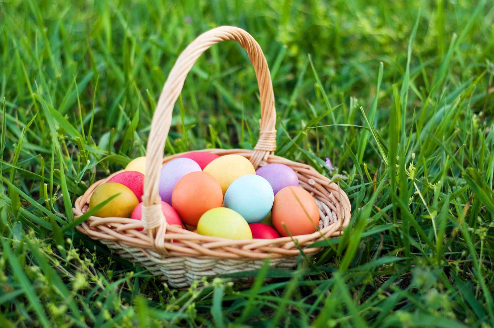
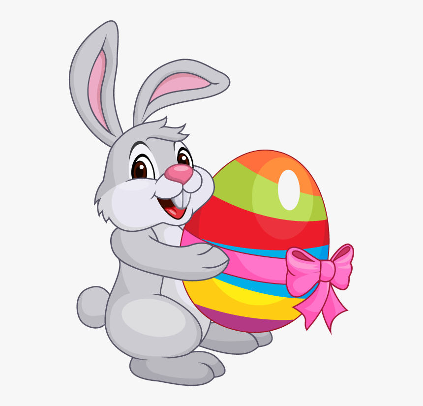
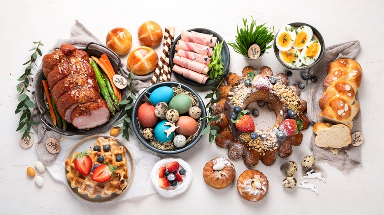
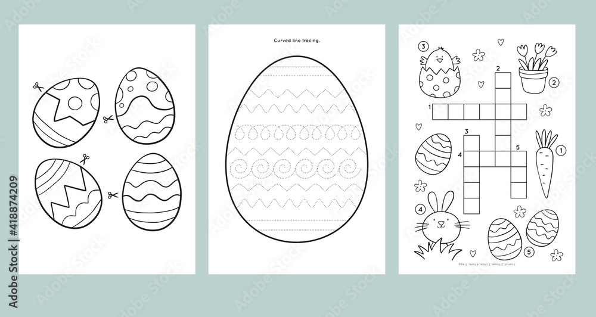

What is Easter?
Easter is a Christian holiday that celebrates the resurrection of Jesus Christ from the dead. It is considered the most important event in Christianity.
Easter is celebrated on the first Sunday following the full moon after the vernal equinox, which usually falls between March 22 and April 25.
History of Easter
The origins of Easter date back to the 2nd century. It was initially a Christian celebration of the resurrection of Jesus, but many of the traditions associated with Easter, such as the Easter bunny and Easter eggs, have pagan roots.
Today, Easter is celebrated with various traditions around the world, including Easter egg hunts, the Easter bunny, and special church services.
Easter Traditions
One of the most popular Easter traditions is the Easter egg hunt, where children search for hidden eggs filled with candy or toys. Decorating eggs is also a common tradition, with people using various techniques and designs.
Another tradition is the Easter bunny, who is said to bring Easter eggs to children. The Easter bunny is often depicted as a rabbit carrying a basket of eggs.
Easter Recipes
Easter is also a time for delicious food, with many families enjoying a special Easter meal together. Some popular Easter dishes include roast lamb, ham, hot cross buns, and Easter desserts like carrot cake and Easter cookies.
Easter Activities
Aside from egg hunts and decorating eggs, there are many other fun Easter activities to enjoy. These include attending Easter church services, participating in Easter parades, and organizing Easter-themed crafts and games.
About the Builder
This Easter celebration page was built with love by Praize. Praize is a passionate web developer who enjoys creating beautiful and interactive websites for various occasions.